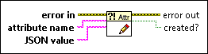

Write Error Cluster Attribute VI
Owning Palette: Multiple Errors VIs
Requires: Base Development System
Updates the value of an attribute stored in an error cluster. If the specified attribute name is not found, this VI adds the attribute with the specified value to the error cluster.
For a single cluster that stores multiple errors, this VI updates only the first error.

 Add to the block diagram Add to the block diagram |
 Find on the palette Find on the palette |